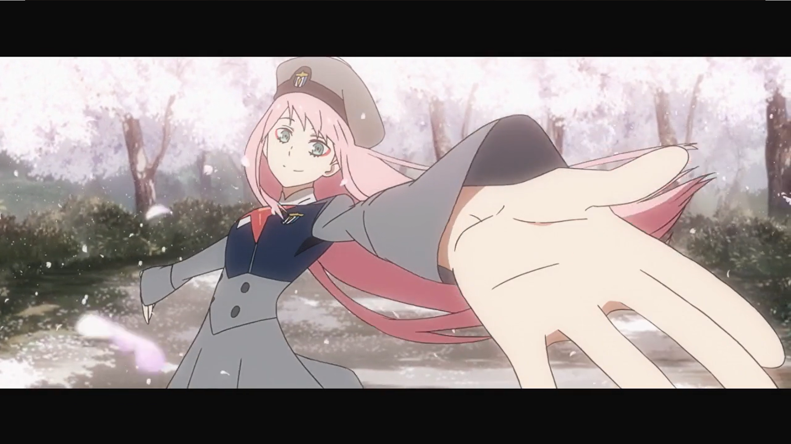
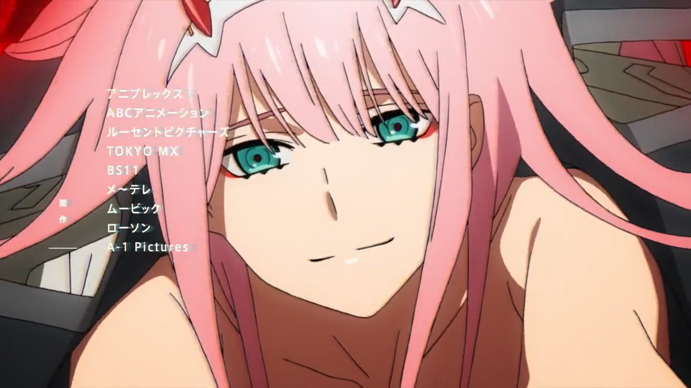
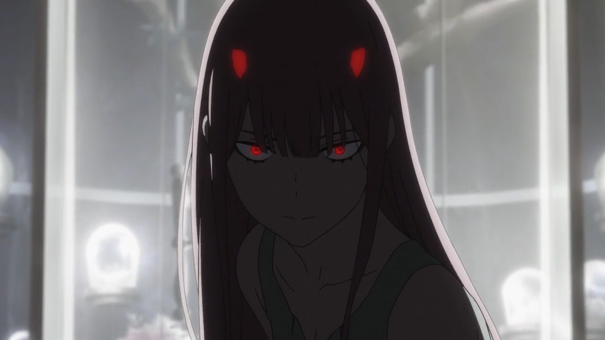
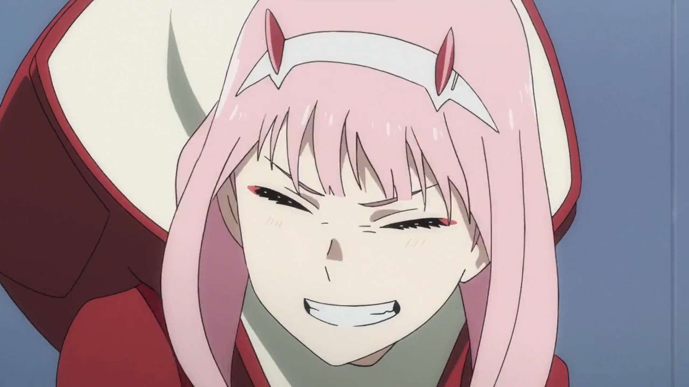
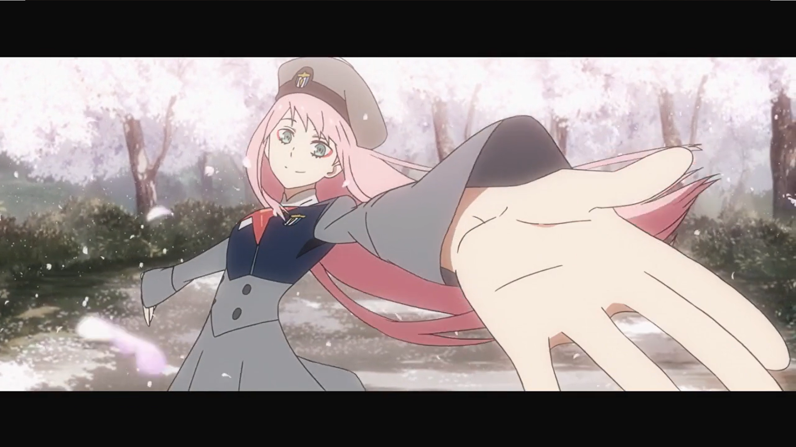
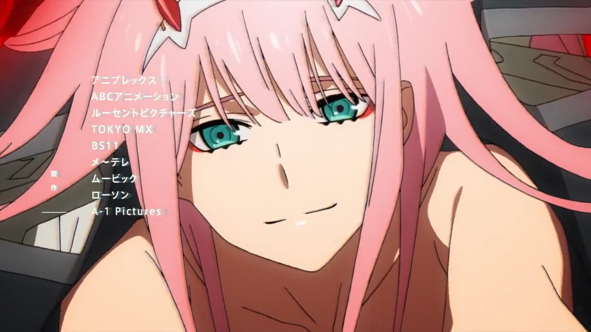
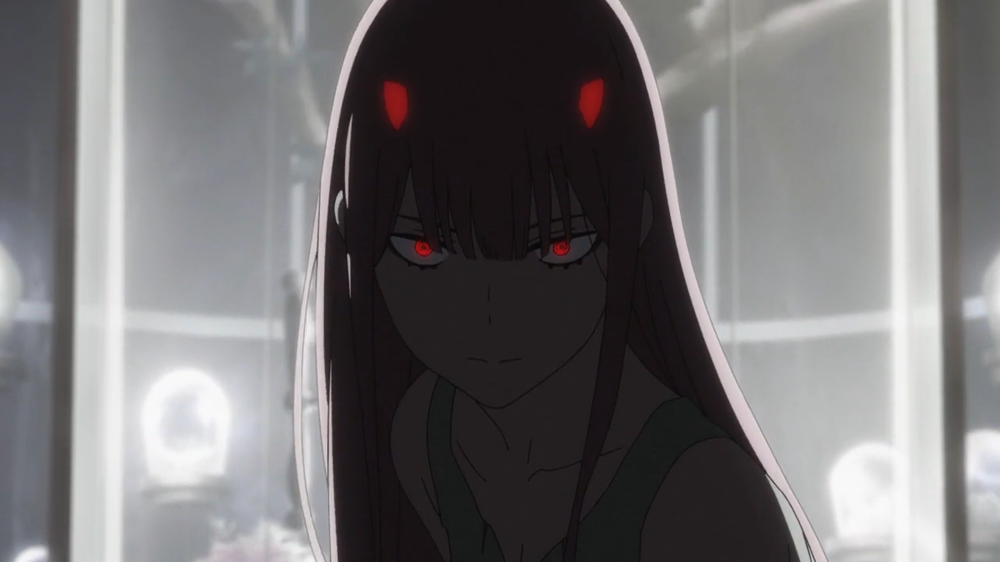
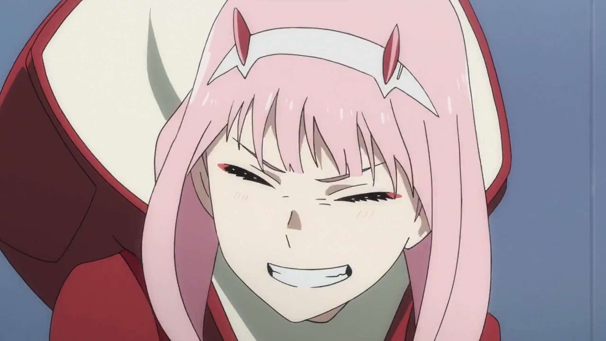

02
Внешность
Ноль Два имеет длинные розовые волосы и пару красных рогов на голове. Глаза аквамаринового цвета, с розовой подводкой для глаз. У неё стройная и спортивная фигура. Является самой высокой среди девушек. Обычно показана в красном пальто с чёрными колготками и белыми сапогами, также на голове она носит ограничитель в области рожек. Как побочный эффект одиночной езды, рога и клыки Ноль Два могут расти с ужасающей скоростью, при этом личность Ноль Два полностью погружается во Франкс, в этот момент она не воспринимает происходящее снаружи, также её глаза становятся красными даже с ограничителем. В детстве она выглядела куда более похожей на монстра, с красной кожей, длинными ногтями и зубами, а кровь ее была синего цвета. Рога были намного больше по сравнению с головой. В детстве носила только тёмно-серый плащ.Личность
Личность у Ноль Два опасная, но притягивающая. Она — элитный пилот с псевдонимом «Убийца напарников» , учитывая то, что все пилоты до Хиро не выдерживали более 3-х поездок с ней. Знает куда больше о внешнем мире, чем остальные члены 13 отряда. Когда Хиро спросил, почему она убивает монстров, Ноль Два сказала, что возможно это из-за того, что она сама была монстром. Возмущается и испытывает злость, когда её называют монстром. Поведение Ноль Два похоже отчасти на поведение ребенка, а от части на поведение ящерицы, т.к. она на половину Рёвозавр. Это показывается её игривым отношением к Хиро и другим членам отряда.
История
В детстве была подопытной в «Саду», где впервые встретила главного героя Хиро. Там она совершила попытку побега вместе с Хиро, которая оказалась провальной. После этого происшествия память Хиро была стёрта. Стереть полностью память Ноль Два не удалось. За 2 года до событий сериала судьба остальных людей была ей безразлична, и она не заботилась о других, из за чего погиб партнёр 090
 






